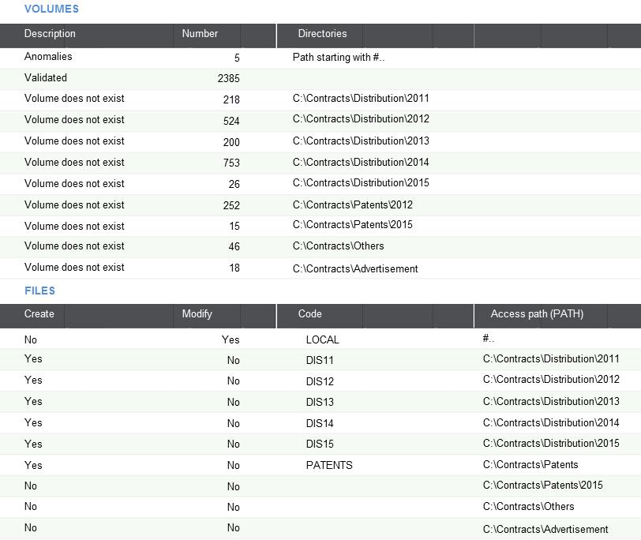
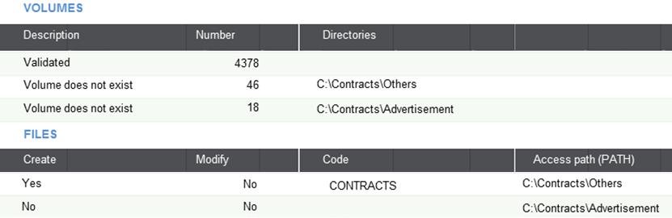

Attachment upgrade
Attachments are documents that are linked to an instance of an object. A document can be attached to a user, an item, a sales order, etc.
Example: Table AOBJTXT stores the link between the key of the instance ((ITM,CD100) for item CD100) and the path (C:\documents_items\my_item_CD100.docx).
Attachment management
Attachment management uses volumes. For each file, the path of an attachment is expressed with the following mandatory syntax: [VOL]/path, where VOL is a volume name, and path is the file path in the volume.
A recodification tool was created to help you replace all the existing operating system paths with a normalized path, based on a volume. What it does is:
- Check the paths found in the attachment table (AOBJTXT).
- Identify the directories that are not assigned to a volume yet, and allow the user to create volumes.
- Replace the paths with volumes.
Adjusting the way the path is created
Grouping paths
To group several paths, you have to map them to the same volume.
Example:
The system finds two attachments: C:\documents\old\myold_doc.docx and C:\contracts\2003\distribution.docx.
If they are not associated to a volume, the system suggests creating two volumes, one for each attachment. However, you can choose to assign both paths to a single volume. To do so, assign the first path to a volume called "olddoc", and then assign the second path to a volume that has the same name.
Caution: The tool creates volume "olddoc" which is assigned to one of the paths, and then renames the second document in the attachment table. However, the second document is not automatically moved to the first location. This has to be done manually.
Using shorter paths
Example:
You have documents in several directories: C:\documents\mails\2013\, C:\documents\mails\2014\, C:\documents\mails\2015\, etc.
By default, the system suggests creating three directories. However, you also have the option of creating a single directory: C:\documents\mails. If you call it "[mails]", you can then define the path of each document as [mails]\2015\mail1.doc, [mails]\2013\mail25.doc, etc. In this case, you do not need to move the documents.
Redefining paths
For local documents (#@C:\path), you have to redefine a volume, and then manually move the documents to the corresponding volume path from every local computer.
Using the tool
When you launch the tool for the first time, it runs a check on the attachment tables. Once this analysis is done, a screen with two grids displays:
Files
The first grid lists the results of the AOBJTXT analysis. The first column displays either of the three following messages:
- Anomalies: This message displays the reason for the error. The most common is "path starting with #". This means that local attachments have been encountered. The number of files in this situation is displayed.
- Validated: This message displays the number of files already assigned to volumes.
- Volume doesn't exist: This message displays directory paths that are not assigned to a volume. The number of attachments is displayed.
The total number of attachments is displayed at the bottom of the grid.
Click Detail next to a result to create a log that gives you details regarding the corresponding results. The log file is displayed on a separate page.
Volumes
The second grid allows you to define actions for each result.
The first part of the grid displays the list of directories that are not assigned to a volume yet. The path (#...) is suggested for all local attachments on a line. You have the following options for each line:
- Create (Yes/No):
- If set to "Yes", a volume is created with the name given, and assigned to a path that can be modified if a shorter path needs to be used.
- If set to "No", no volume is created.
- Modify (Yes/No):
This can be set to "Yes" only if Create was set to "No". You can then enter an existing volume name, and the corresponding attachments will be renamed with the corresponding volume, according to the document definition.
The code corresponds to the name of the volume to be used or created. The path corresponds to the volume to be created. It can only be entered if Create was set to "Yes".
Click Validation to run the creation or modification.
Operations available in the right-hand panel
The following actions are available in the right-hand panel:
- Validation: Triggers the updates according to the date entered in the second grid. When the operation is finished, the page displays with all issues that remain in the first grid.
- Refresh: Re-launches the analysis for the existing attachments and displays the results. It can be helpful if manual modifications have been performed at the attachment level.
- Log: Displays the log file describing the operations done after validating changes.
- Control files: Checks if the attachments can be physically found at their intended locations.
Renaming strategies
When creating modules, it can be helpful to find the right balance between the number of files and the number of volumes. For example, if you have the following volumes:
C:\Contracts\Distribution\2011: 218 documents C:\Contracts\Distribution\2012: 524 documents C:\Contracts\Distribution\2013: 200 documents C:\Contracts\Distribution\2014: 753 documents C:\Contracts\Distribution\2015: 26 documents C:\Contracts\Patents\2012: 252 documents C:\Contracts\Patents\2015: 15 documents C:\Contracts\Others: 46 documents C:\Contracts\Advertisement: 18 documents
You can create one volume per year for each distribution contract directory ([DIS11], [DIS12], [DIS13], [DIS14], [DIS15]), one volume for all patents, and one volume for all the other documents. In this scenario, you need to recodify the longest path first.

The process is as follows:
- Recodify the local path as
[LOCAL]/path. - Create the "DIS11" to "DIS15" volumes, and recodify the corresponding files.
- Create the "PATENTS" volume, and recodify the files starting with C:\Contracts\Patents.
It also handles the 15 files located in C:\Patents\2015, even though no action was required for them.
After running the tool, 64 files remain (C:\Contracts\Others and C:\Contracts\Advertisements).

You can now follow the same process to rename the remaining files. Recodifying the longest paths first makes it easier to recodify the rest of the files.